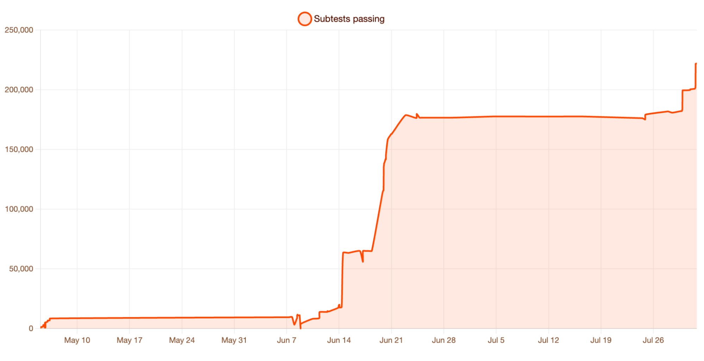
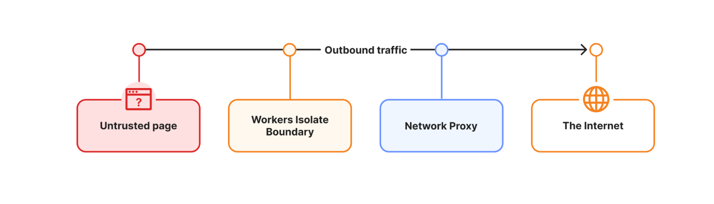

Executive Summary
클라우드플레어가 8월 6일 Kitesurf를 내놨다. 사람이 아니라 AI 에이전트가 쓰라고 만든 클라우드 브라우저다. 탭과 테마, 확장 기능, 픽셀 단위로 정확한 60프레임 렌더링을 모두 뺐다. 안에 크로미엄이 없고, 러스트로 짠 렌더링 부품을 웹어셈블리로 컴파일해 자사 서버리스 플랫폼인 워커스 위에서 돌린다.
회사가 공개한 14개 URL 측정에서 HTML 추출 작업 기준 메모리는 크로미엄의 7분의 1로 줄었다. 대신 화면을 다 그리는 데 걸리는 시간은 1.7배에서 1.8배로 늘었다. 소프트웨어 렌더링이라 JIT 컴파일의 이득을 받지 못하는 탓이다. 에이전트가 기다리는 것이 사람의 눈에 닿을 화면이 아니라 다음 토큰이라서 이 교환이 성립한다.
성능 이야기는 여기까지다. 웹을 읽는 값을 인프라가 대신 깎아 주면 콘텐츠를 만드는 쪽에는 다른 숙제가 생긴다. 사람이 보는 HTML과 에이전트가 읽는 구조화 데이터 가운데 어느 쪽이 우리 사이트의 정본인가. 정하지 않은 채로 두면 둘 사이의 어긋남이 다음 데이터 품질 문제가 된다.
주요 수치
아낀 것과 내준 것을 같은 자리에 놓고 봐야 이 설계가 읽힌다. 앞의 두 숫자는 크로미엄 대비 덜 쓴 자원이고, 세 번째는 그 대가로 늘어난 시간이다. 마지막 숫자는 크로미엄 없이도 보통의 웹페이지를 감당한다는 회사 쪽 근거다.
출처: 클라우드플레어 기술 블로그, 14개 URL 코퍼스 측정
3.8배
HTML 추출 시 CPU 절감
크로미엄 대비. 스크린샷 작업에서는 3.1배
7.0배
HTML 추출 시 메모리 절감
스크린샷 작업에서는 4.7배
1.8배
늘어난 소요 시간
가벼움의 대가. 소프트웨어 렌더링이라 JIT 이득이 없다
21만 5천
통과한 웹 플랫폼 테스트
매주 수백 건씩 통과 항목이 늘고 있다
마지막 숫자가 어떤 속도로 쌓였는지는 회사가 함께 공개한 그래프에 그대로 나와 있다.

무엇을 걷어냈고 무엇을 내줬나
클라우드플레어가 내놓은 설계 근거는 간단하다. 에이전트는 탭이나 테마, 확장 기능, 기기 간 동기화를 쓰지 않는다. 대신 토큰 수와 컨텍스트 윈도, 확장성과 성능, 비용을 따진다. 사람용 브라우저는 정확히 그 반대 순서로 만들어져 있다. 메모리와 연산을 많이 쓰다 보니 에이전트 하나에 브라우저 하나를 붙이는 방식은 비용이 맞지 않고, 그래서 웹의 상당 부분이 비싼 모델을 굴릴 수 있는 쪽에만 열려 있다고 회사는 덧붙였다.
Kitesurf 안에는 크로미엄이 없다. 러스트로 만들어진 부품 세 개를 웹어셈블리로 컴파일해 워커스 위에 얹었다. HTML을 파싱하고 글자를 그리는 일은 Blitz가 맡고, CSS 해석은 파이어폭스에서 가져온 Stylo가, 자바스크립트 실행은 Boa가 맡는다. 페이지마다 별도의 V8 아이솔레이트가 뜨고, 바깥으로 나가는 요청은 전용 워커를 한 번 통과하면서 쿠키와 CORS 경계를 지킨다. 프롬프트 인젝션처럼 에이전트에게만 생기는 위협을 격리로 다루겠다는 구조다.
만드는 데 걸린 시간은 12주다. 브라우저 엔진을 처음부터 새로 쓴 것이 아니라 이미 나와 있는 오픈소스 부품을 다시 조립했기에 가능했던 일정이고, 출발점은 오픈소스 헤드리스 엔진 Obscura를 워커스로 옮긴 시제품이었다. 지금은 웹 플랫폼 테스트 21만 5천 건 이상을 통과하고 위키백과와 해커뉴스, TodoMVC, 자사 대시보드 일부를 제대로 그린다.
성능은 14개 URL로 짜인 코퍼스에서 크로미엄과 나란히 측정했다. 스크린샷을 뜨는 작업에서 CPU는 3.1배, 메모리는 4.7배 덜 썼고, HTML을 추출하는 작업에서는 각각 3.8배와 7.0배로 격차가 더 벌어졌다. 같은 측정에서 걸린 시간은 오히려 1.7배에서 1.8배로 늘었다. 크로미엄을 1.0으로 두고 환산하면 아낀 쪽과 내준 쪽의 크기가 비슷하지 않다.
속도를 내주고 자원을 아꼈다는 것이 이 설계의 요약이다. 사람이 화면 앞에 앉아 있다면 1.8배 느린 브라우저는 쓸 수 없는 물건이지만, 에이전트는 페이지를 열어 놓고 사람에게 보여 주지 않는다. 열 개의 작업을 동시에 돌릴 수 있는지가 하나를 0.5초 빨리 끝내는 것보다 중요한 자리에서는 계산이 뒤집힌다.
지금은 베타 기간이라 계정별 한도 안에서 무료로 쓸 수 있다. 개발자가 브라우저를 코드로 제어하는 자사 제품 Browser Run의 접속 주소에 파라미터 하나를 붙이면 크로미엄 대신 Kitesurf가 뜬다. 회사는 준비가 되는 대로 오픈소스로 공개해 고객이 자기 계정에 직접 배포할 수 있게 하겠다고 밝혔다.
사람이 설치하지 않는 브라우저
발표 직후 여러 매체가 이 브라우저를 퍼플렉시티의 코멧, 오픈AI의 아틀라스와 같은 줄에 세웠다. 이름에 브라우저가 들어간다는 점을 빼면 두 갈래는 쓰는 사람도 파는 방식도 다르다. 한쪽은 사람이 자기 컴퓨터에 설치하고 AI가 대신 클릭해 주는 제품이고, 다른 한쪽은 에이전트를 만드는 개발자가 서버에서 호출하는 인프라다.
| 갈래 | 누가 쓰는가 | 해당 제품 |
|---|---|---|
| 소비자용 에이전틱 브라우저 | 최종 사용자가 내려받아 설치한다 | 퍼플렉시티 코멧, 오픈AI 아틀라스, 디아 |
| 개발자용 클라우드 브라우저 | 에이전트를 만드는 쪽이 코드로 호출한다 | 브라우저베이스, 브라우저유즈, 그리고 Kitesurf |
표의 윗줄은 지금 정리되는 중이다. 오픈AI는 지난 7월 9일 아틀라스를 접는다고 밝혔고 서비스는 8월 9일 종료된다. 2025년 10월에 맥용으로 나온 지 채 열 달이 되지 않았다. 에이전트 브라우징 기능은 사라지지 않고 챗GPT 데스크톱 앱과 크롬 확장으로 옮겨 간다. 사람들이 이미 쓰는 브라우저 안으로 들어가는 편이 낫다는 판단이었다.
아랫줄에서는 지금까지 크로미엄을 클라우드에 띄워 주는 방식이 표준이었다. Kitesurf가 겨루는 자리가 여기이고, 내세우는 차별점은 그 크로미엄을 아예 쓰지 않는다는 것이다. 브라우저 엔진 교체는 소비자에게는 팔 만한 이야기가 아니지만, 세션 하나당 원가를 세는 쪽에는 곧바로 숫자로 닿는다.
가격을 매기는 방식도 갈래를 따라 나뉜다. 설치형 제품은 사람 한 명이 매달 내는 구독료로 정해지고, 인프라 쪽은 세션을 몇 개나 열었고 얼마나 오래 붙잡았는지로 정해진다. 이 방식에서는 페이지 하나를 여는 데 든 메모리와 연산이 그대로 원가표에 적힌다. 크로미엄을 걷어냈다는 말이 여기서는 기능 설명이 아니라 단가 이야기가 되는 이유다.
한 가지는 분명히 해 둘 만하다. 에이전트가 웹을 얼마나 잘 다루는지는 여전히 사람과 격차가 큰 미해결 문제이고, Kitesurf는 그 문제를 풀겠다고 나선 물건이 아니다. 에이전트가 똑똑해지든 아니든 페이지를 한 번 여는 데 드는 값이 있고, 이 발표는 그 값을 겨냥한다.
미해결로 남은 것이 하나 더 있다. 열어 본 페이지에 적힌 문장을 에이전트가 사용자의 지시로 착각하는 프롬프트 인젝션은 소비자용 AI 브라우저에서 반복해 제기됐고, 앤트로픽은 에이전트에게 브라우저를 맡기는 일이 여전히 위험하다고 공개적으로 말한 바 있다. Kitesurf가 격리를 성능만큼 앞세운 배경이 여기 있다. 다만 격리는 실행 환경을 갈라 두는 장치이지, 페이지에 적힌 문장 가운데 무엇을 따르면 안 되는지 가려 주는 장치는 아니다.

막는 쪽과 파는 쪽이 같은 회사다
클라우드플레어는 지난 1년 동안 AI 트래픽을 막는 쪽에서 이름을 알렸다. 7월 1일에는 AI 봇을 검색과 에이전트, 학습 세 갈래로 나눠 각각 다르게 다룰 수 있는 설정을 열었고, 9월 15일부터 새로 들어오는 도메인은 광고가 붙은 페이지에서 학습과 에이전트 두 갈래를 기본으로 차단한다. 크롤링할 때마다 발행사가 돈을 받는 방식은 답변에 실제로 쓰였을 때 받는 방식으로 바뀌는 중이다.
그 회사가 한 달 뒤 에이전트가 웹을 더 싸게 읽을 수 있는 브라우저를 내놨다. 모순처럼 보이지만 두 상품이 겨냥하는 쪽이 다르다. 허락 없이 들어오는 크롤러는 막아 발행사 편에 서고, 허락받고 들어오는 에이전트에게는 인프라를 판다. 접근을 통제하는 관문과 그 관문을 통과한 뒤의 실행 환경을 한 회사가 함께 쥐는 구도다.
규모를 보면 이 배치가 왜 나왔는지 읽힌다. 자사 관측망 기준으로 6월 초 봇 트래픽은 사람 트래픽을 넘어섰고, 에이전트 요청은 1년 사이 열일곱 배 넘게 늘었다. 웹을 읽는 주체가 사람에서 기계로 넘어가는 구간에서 관문 사업자는 양쪽 모두에게 물건을 팔 수 있다.
발행사 쪽 계산은 이미 한 차례 어긋난 적이 있다. 크롤러를 막은 대형 발행사들이 방문자는 잃었는데 AI 답변 속 인용은 대부분 그대로였다는 것을 1차 데이터로 살펴본 적이 있고, 학습용 크롤링과 실시간 에이전트 요청이 갈라지면서 robots.txt 한 줄로는 뒤엣것을 막지 못하게 된 사정도 따로 다뤘다. 차단 스위치의 효용이 줄어드는 동안 반대편에서는 읽는 값이 내려간다.
정본을 어디에 둘 것인가
Kitesurf가 건드리지 않은 것이 하나 있다. 콘텐츠 자체다. 웹 페이지는 여전히 사람의 화면을 위해 만들어진 DOM이고, 에이전트는 그것을 열어 텍스트를 추출한 다음 토큰으로 바꿔 읽는다. 클라우드플레어가 한 일은 그 과정을 싸게 만든 것이지 과정을 없앤 것이 아니다.
그런데 같은 발표문에 콘텐츠를 만드는 쪽이 새겨 둘 문장이 하나 섞여 있다. 에이전트에게 중요한 것은 기계가 읽을 수 있게 구조화된 콘텐츠이며, CSS 해석이 조금 어긋나거나 렌더링이 픽셀 단위로 정확하지 않아도 에이전트는 괜찮다는 대목이다. 읽는 비용을 깎아 주는 회사가 정작 원하는 것은 값싼 렌더링이 아니라 구조가 잡힌 원문이라고 말한 셈이다.
여기서 발행자에게 선택이 생긴다. 사람이 보는 HTML을 유일한 정본으로 두고 에이전트가 알아서 읽게 두거나, 에이전트용 표현을 따로 만들어 함께 내보내거나 둘 중 하나다. 페블러스 블로그도 뒤엣것에 가깝게 운영한다. 같은 글이 HTML과 JSON-LD 스키마, llms.txt와 RSS로 각각 나가고 있으니 한 편의 글에 표현이 여럿이다.
표현을 늘리는 순간 생기는 비용은 관리다. 제목을 고쳤는데 구조화 데이터에는 옛 제목이 남고, 문단을 덜어냈는데 요약에는 그대로 있고, 날짜를 바꿨는데 한쪽만 바뀐다. 사람이 보는 화면에서는 멀쩡한데 에이전트가 읽는 쪽에서만 틀린 상태가 되고, 발행자는 그 사실을 한동안 알지 못한다. 데이터 품질 문제가 보통 이런 모양으로 시작한다.
정본을 하나로 두면 관리 비용은 낮지만 에이전트가 읽는 품질을 통제하지 못하고, 둘로 두면 품질은 통제하되 둘이 어긋날 위험을 떠안는다. 어느 쪽을 고르든 정해야 할 것은 같다. 무엇이 정본이고, 나머지 표현이 정본에서 자동으로 만들어지는가.
사이트를 운영하는 쪽이라면 지금 두 가지를 점검해 볼 수 있다. 둘 다 에이전트 트래픽이 더 늘기 전에 답이 나와 있어야 하는 질문이다.
- • 에이전트용 표현이 정본에서 자동으로 생성되는가. 사람이 두 곳을 각각 고치는 구조라면 어긋남은 시간문제다. 생성이 자동이면 어긋남은 배포 사고로 드러나지만, 수작업이면 조용히 쌓인다.
- • 둘이 어긋났을 때 그것을 알아차릴 방법이 있는가. 사람이 보는 화면만 확인하는 점검으로는 구조화 데이터의 오류가 잡히지 않는다. 사람 쪽 화면과 기계 쪽 표현을 같은 기준으로 대조하는 절차가 있어야 한다.
웹을 소비하는 주체가 바뀌면 웹의 형태도 바뀐다. 이번 발표는 그 변화를 인프라 쪽에서 먼저 반영한 사례이고, 콘텐츠 쪽 반영은 아직 각자의 몫으로 남아 있다.
Editor's Note
페블러스가 AI-Ready Data를 이야기할 때 품질과 함께 놓는 것이 표현 사이의 일관성이다. 같은 사실이 사람용 화면과 기계용 데이터에서 다르게 적혀 있으면, 그 데이터를 읽은 판단도 함께 어긋난다.
참고문헌
1차 소스 (클라우드플레어 공식)
- 1.Cloudflare. (2026, August 6). "Kitesurf: a browser built for AI agents." The Cloudflare Blog.
- 2.Cloudflare. (2026, August 6). "Kitesurf." Cloudflare Changelog.
- 3.Cloudflare. "Kitesurf — Browser Run." Cloudflare Docs.
보도
- 4.TechCrunch. (2026, August 7). "Cloudflare launches Kitesurf, a browser built for AI agents."
- 5.MarkTechPost. (2026, August 6). "Cloudflare Introduces Kitesurf, an Agent-First Web Browser That Runs Entirely in V8 Isolates on Cloudflare Workers."
- 6.TheNextWeb. (2026, August). "Cloudflare's Kitesurf browser is built for AI agents, not humans."